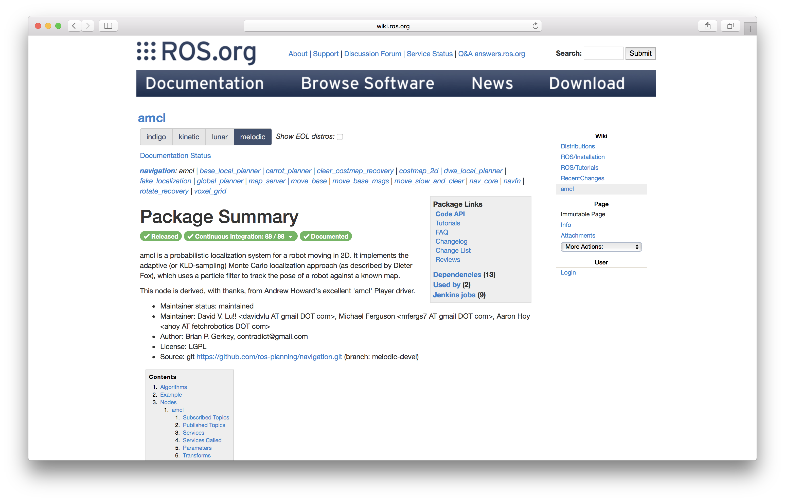
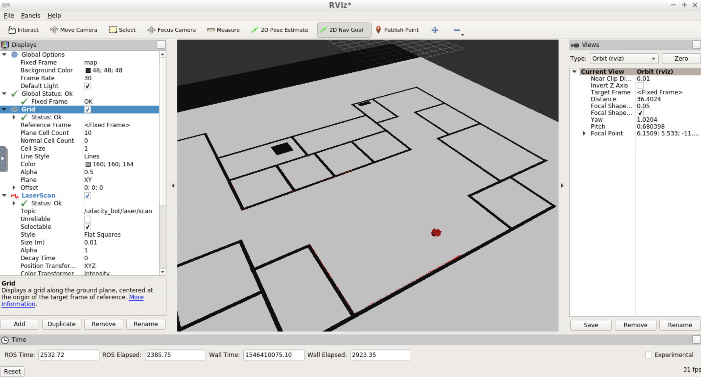
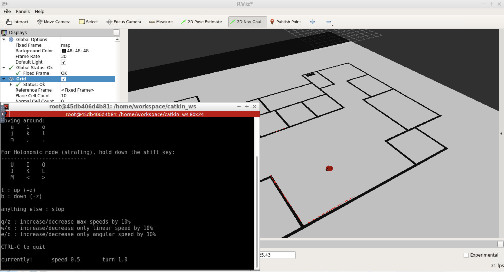

Project Overview
Welcome to the Where Am I? localization project! In this project, you will learn to utilize ROS AMCL package to accurately localize a mobile robot inside a map in the Gazebo simulation environments.
Over the course of this lesson, you will learn several aspects of robotic software engineering with a focus on ROS:
-
Create a ROS package that launches a custom robot model in a custom Gazebo world
-
Utilize the ROS AMCL package and the Tele-Operation / Navigation Stack to localize the robot
-
Explore, add, and tune specific parameters corresponding to each package to achieve the best possible localization results
Native Installation & Virtual Machine
If you are working with a native ROS installation or using a VM, some of the following package might need to be installed. You could install them as shown below:
$ sudo apt-get install ros-kinetic-navigation $ sudo apt-get install ros-kinetic-map-server $ sudo apt-get install ros-kinetic-move-base $ sudo apt-get install ros-kinetic-amcl
Simulation Setup
In the previous projects, you have built your simulation environment and a robot. Let us set them up in the Project 3 Workspace for our next tasks.
Navigate to Workspace by clicking the Project Workspace on the side bar. You might want to open it in a new window. You could use either the terminal in Classroom without GPU mode or the VNC Desktop with GPU mode to do the setup.
Setup your catkin_ws folder as well as the src folder, then we need to grab the code from last project. Namely, the package you created to launch the simulation of your Gazebo world and your robot. You could do that in two ways.
Method 1: git
If you have pushed your submission for the ROS Introduction project to GitHub, go ahead and create a new repository then duplicate your code from last project to it. Substitute the url in the following commands with your project GitHub url.
git clone --bare https://github.com/exampleuser/old-repository.git cd old-repository.git git push --mirror https://github.com/exampleuser/new-repository.git cd .. rm -rf old-repository.git
Source: https://help.github.com/articles/duplicating-a-repository/
Method 2: Folder Upload
If you want to upload the package folder to the Project 3 Workspace, go to the project Workspace and click the + button, then select Upload Folder to upload your package folder!
Verify Your Simulation Setup
Do a quick catkin_make and source the devel/setup.bash script. Launch the world to verify if the system is good to go!
roslaunch <YOUR PACKAGE NAME> world.launch
Map Setup
Great! We have our simulation environment ready now. However, we cannot localize the robot just yet. The poor robot has zero information on its surroundings! Let us generate a map for it so that it knows what to expect in this environment.
Generally speaking, in the development of a robotic project, engineers utilize Mapping tools to measure and map the area robot will be operating in. Since we are developing in simulation environment the problem is simplified. We could generate the map from Gazebo world directly using a ROS package: pgm_map_creator.
Note that currently, the map creator could not handle objects in the environment well. Please use the it with vertical surfaces only!

PGM Map File
The map ROS AMCL Package uses is a pgm file. A pgm file is a grayscale image file. For more information about pgm file or more generally, pnm file, please refer to Netpbm format Wiki Page.
By default, AMCL package will treat 'darker' pixels as obstacle in the pgm map file, and 'lighter' pixels as free space. The threshold could be set as a parameter which we will cover when we are building the launch file.
Navigate to your ROS package folder and create a maps folder. That's where your map file will reside.
$ cd /home/workspace/catkin_ws/src/<YOUR PACKAGE NAME> $ mkdir maps
PGM Map Creator
Install Dependencies
We need libignition-math2-dev and protobuf-compiler to compile the map creator:
sudo apt-get install libignition-math2-dev protobuf-compiler
Clone the Repository
Clone the package pgm_map_creator to your src folder.
cd /home/workspace/catkin_ws/src/ git clone https://github.com/udacity/pgm_map_creator.git
Build the package:
cd .. catkin_make
Add and Edit the World File
Copy the Gazebo world you created to the world folder
cp <YOUR GAZEBO WORLD FILE> src/pgm_map_creator/world/<YOUR GAZEBO WORLD FILE>
Insert the map creator plugin to your map file. Open the map file using the editor of your choice. Add the following tag towards the end of the file, but just before </world> tag:
<plugin filename="libcollision_map_creator.so" name="collision_map_creator"/>
Create the PGM Map!
Open a terminal, run gzerver with the map file:
gzserver src/pgm_map_creator/world/<YOUR GAZEBO WORLD FILE>
Open another terminal, launch the request_publisher node
roslaunch pgm_map_creator request_publisher.launch
Wait for the plugin to generate map. It will be located in the map folder of the pgm_map_creator! Open it to do a quick check of the map. If the map is cropped, you might want to adjust the parameters in launch/request_publisher.launch, namely the x and y values, which defines the size of the map:
<arg name="xmin" default="-15" /> <arg name="xmax" default="15" /> <arg name="ymin" default="-15" /> <arg name="ymax" default="15" /> <arg name="scan_height" default="5" /> <arg name="resolution" default="0.01" />
Edit the Map
Remember, the map is an image, which means you could edit it using image processing softwares like gimp in Linux. If you have found the map not accurate due to the models, feel free to edit the pgm file directly!
Add the Map to Your Package
Now we have the map file, let us move it to where it is needed! That is the maps folder you created at the very beginning.
cd /home/workspace/catkin_ws/ cp src/pgm_map_creator/maps/<YOUR MAP NAME> src/<YOUR PACKAGE NAME>/maps/<YOUR MAP NAME>
You would also need a yaml file providing the metadata about the map. Create a yaml file next to your map:
cd src/<YOUR PACKAGE NAME>/src/maps touch <YOUR MAP NAME>.yaml
Open the yaml file and add the following lines to it:
image: <YOUR MAP NAME> resolution: 0.01 origin: [-15.0, -15.0, 0.0] occupied_thresh: 0.65 free_thresh: 0.196 negate: 0
Note that the origin of the map should correspond to your map's size. For example, the default map size is 30 by 30, so the origin will be [-15, -15, 0], i.e. half the size of the map.
AMCL Package
You learned about Monte Carlo Localization (MCL) in great detail in the previous lessons. Adaptive Monte Carlo Localization (AMCL) dynamically adjusts the number of particles over a period of time, as the robot navigates around in a map. This adaptive process offers a significant computational advantage over MCL.
The ROS AMCL package (http://wiki.ros.org/amcl) implements this variant and you will integrate this package with your robot to localize it inside the provided map.

As you have learned in the previous projects, ROS utilizes launch files to run ROS nodes. In the following concepts, you will start to build the launch file for the AMCL package!
AMCL launch file
First things first, create a launch file for the AMCL node in the launch folder of your package:
$ cd /home/workspace/catkin_ws/src/<YOUR PACKAGE NAME>/launch/ $ vi amcl.launch # nano, gedit
Feel free to use whichever editor you prefer: vi, nano, or gedit.
Add the root element <launch> tag in the amcl.launch file:
<launch> <!-- TODO: Add nodes here --> </launch>
Great, we have the launch file in place! Now, let's add nodes to this amcl.launch file. A list of nodes is provided below as a tracker of your progress. You don't need to complete that now - come back when you have all three nodes added!
Map Server Node
The first node is the map_server node (http://wiki.ros.org/map_server)). The map_server node provides map data as a ROS service to other nodes such as the amcl node. Here, map_server node will locate the map you created in the Map Setup step and send it out as the map data.
First, add an argument of the path to your map file so that you could easily change the map loaded and avoid typing long paths again:
<arg name="map_file" default="$(find <YOUR PACKAGE NAME>)/maps/<YOUR MAP NAME>.yaml"/>
Then, add the map_server node, which utilizes the argument you created just now:
<node name="map_server" pkg="map_server" type="map_server" args="$(arg map_file)" />
Your amcl.launch file should look like this now:
<launch> <!-- Map Server --> <arg name="map_file" ... /> <node name="map_server" ... /> </launch>
Nice, we have the map_server node set up. Let's move on to the amcl node.
AMCL Node
The next node to be set up is the amcl node. As it was introduced in the previous concepts, it takes odometry and laser scan data to perform the AMCL localization.
Add amcl Node
First, add the amcl node in your amcl.launch file:
<launch> <!-- Map Server --> ... <!-- AMCL Node --> <node name="amcl" pkg="amcl" type="amcl" output="screen"> </node> </launch>
Ok, we created the amcl node. However it needs more information to localize the robot! For example, what are the sensor readings from the LiDAR?
Remap scan topic
By default, amcl package will look for the scan topic for LiDAR data. In the simulation, the Hokuyo LiDAR sensor actually publishes on the <YOUR PACKAGE NAME>/laser/scan topic. We will use the remap tag to remap the topic name scan to the actual topic name so that the amcl package could use it!
Add this remap line to your amcl node in the amcl.launch file:
... <!-- AMCL Node --> <node name="amcl" ...> <remap from="scan" to="<YOUR PACKAGE NAME>/laser/scan"/> </node>
For more information on remap, check out the ROS Wiki here: http://wiki.ros.org/roslaunch/XML/remap
Add AMCL Parameters
The AMCL node also requires a set of parameters in order to connect the world (map frame) with the robot (odom frame).
Add the following parameter tags to the amcl node in the amcl.launch file:
... <!-- AMCL Node --> <node name="amcl" ...> <remap from="scan" to="<YOUR PACKAGE NAME>/laser/scan"/> <param name="odom_frame_id" value="odom"/> <param name="odom_model_type" value="diff-corrected"/> <param name="base_frame_id" value="robot_footprint"/> <param name="global_frame_id" value="map"/> </node>
From the ROS Wiki (http://wiki.ros.org/amcl)), we could find the purpose of the parameters added above:
odom_frame_id(string, default: "odom"): Which frame to use for odometryodom_model_type(string, default: "diff"): Which model to use, either "diff", "omni", "diff-corrected" or "omni-corrected"base_frame_id(string, default: "base_link"): Which frame to use for the robot baseglobal_frame_id(string, default: "map"): The name of the coordinate frame published by the localization system
Remember, AMCL package 'links' the robot (odom frame) with the world (map frame). These parameters are required for amcl package to localize the robot in the world.
Optional: Set Initial Position
You could use the RViz 2D Pose Estimate function to give AMCL a pose estimate as position, but you could also have it defined in the launch file.
Add the following parameters to the AMCL node, the values should correspond to your world.launch file:
<param name="initial_pose_x" value="<YOUR X VALUE>"/> <param name="initial_pose_y" value="<YOUR Y VALUE>"/>
The Launch File
Now, your amcl.launch file should look like this:
<launch> <!-- Map Server --> <arg name="map_file" ... /> <node name="map_server" ... /> <!-- AMCL Node --> <node name="amcl" pkg="amcl" type="amcl" output="screen"> <remap from="scan" to="<YOUR PACKAGE NAME>/laser/scan"/> <param name="odom_frame_id" value="odom"/> <param name="odom_model_type" value="diff-corrected"/> <param name="base_frame_id" value="robot_footprint"/> <param name="global_frame_id" value="map"/> <!-- If you choose to define initial pose here --> <param name="initial_pose_x" value="0"/> <param name="initial_pose_y" value="0"/> </node> </launch>
Now, the robot has a map and the amcl package to localize itself. But how could it navigate to other positions to collect more information about its surroundings? ROS Navigation Stack is the answer.
Move Base Node
Two nodes down, one node to go!
You will be working with the move_base package using which you can define a navigation goal position for your robot in the map, and the robot will navigate to that goal position. Note that this step is optional if you choose to use teleop node to control and localize your robot.
The move_base package is a very powerful tool. It utilizes a costmap - where each part of the map is divided into which area is occupied, like walls or obstacles, and which area is unoccupied. As the robot moves around, a local costmap, in relation to the global costmap, keeps getting updated allowing the package to define a continuous path for the robot to move along.
What makes this package more remarkable is that it has some built-in corrective behaviors or maneuvers. Based on specific conditions, like detecting a particular obstacle or if the robot is stuck, it will navigate the robot around the obstacle or rotate the robot till it finds a clear path ahead.
Add ROS move_base Node
Let's add the move_base node to the amcl.launch file:
<launch> <!-- Map Server --> ... <!-- AMCL Node --> ... <!-- Move Base --> <node name="move_base" pkg="move_base" type="move_base" respawn="false" output="screen"> </node> </launch>
Remap scan Topic
Again, we need to remap the scan topic to the correct one.
<remap from="scan" to="<YOUR PACKAGE NAME>/laser/scan"/>
Add Parameters to move_base Node
Similar to the amcl node, move_base node requires a set of parameters to move the robot in the world. As we already know , we could use the param tag to specify the parameter. But when there are plenty of parameters, we could use the rosparam tag to include config files to set multiple parameters directly!
Planners
Add the following param tags to the move_base node:
<param name="base_global_planner" value="navfn/NavfnROS" /> <param name="base_local_planner" value="base_local_planner/TrajectoryPlannerROS"/>
Load Config Files
Then we need to create/get the config files and load them in the launch file:
$ cd .. $ mkdir config $ cd config
Download the config files from Udacity S3 bucket and add them to the config folder:
wget https://s3-us-west-1.amazonaws.com/udacity-robotics/Resource/where_am_i/config.zip unzip config.zip rm config.zip
These config files have a preset of parameters defined for you to navigate the robot if you choose to send navigation goal to the robot in testing.
Config Files
Now that we have the config files ready, we will include them in the launch file, in the move_base node:
<rosparam file="$(find udacity_bot)/config/costmap_common_params.yaml" command="load" ns="global_costmap" /> <rosparam file="$(find udacity_bot)/config/costmap_common_params.yaml" command="load" ns="local_costmap" /> <rosparam file="$(find udacity_bot)/config/local_costmap_params.yaml" command="load" /> <rosparam file="$(find udacity_bot)/config/global_costmap_params.yaml" command="load" /> <rosparam file="$(find udacity_bot)/config/base_local_planner_params.yaml" command="load" />
Well done! That was a lot of work. Let us move on!
Teleop Package
If you prefer to control your robot to help it localize itself as you did in the lab, you would need to add the teleop node to your package. Thanks to the ROS community, we could use ros-teleop package to send command to the robot using keyboard or controller.
Clone the ros-teleop package to your src folder:
cd /home/workspace/catkin_ws/src git clone https://github.com/ros-teleop/teleop_twist_keyboard
Build the package and source the setup script:
cd .. catkin_make source devel/setup.bash
Now you could run the teleop script as is described in the README file:
rosrun teleop_twist_keyboard teleop_twist_keyboard.py
Localization: Launching
You have your robot, your map, your localization and navigation nodes. Let’s launch it all and test it!
First, launch the simulation:
$ cd /home/workspace/catkin_ws/ $ roslaunch <YOUR PACKAGE NAME> <YOUR WORLD>.launch
In a new terminal, launch the amcl launch file:
$ roslaunch <YOUR PACKAGE NAME> amcl.launch
Rviz Configuration
As you did in a previous section, setup your RViz by adding the necessary displays and selecting the required topics to visualize the robot and also the map.
Add by display type
In Rviz,
- Select
odomfor fixed frame - Click the “Add” button and
- add
RobotModel: this would add the robot itself to RViz - add
Mapand select firsttopic/map: the second and third topics in the list will show the global costmap, and the local costmap. Both can be helpful to tune your parameters - add
PoseArrayand selecttopic/particlecloud: this will display a set of arrows around the robot
- add
Each arrow is essentially a particle defining the pose of the robot that your localization package created. Your goal is to add/tune the parameters that will help localize your robot better and thereby improve the pose array.
Note: You can save the above RViz setup in a configuration file and launch RViz with the same configuration every time. This will make the process more efficient for you! Click file -> save config to save the current configuration.

Add by topic
When adding elements to RViz, you could also select By topic tab. Here, all valid topics would be displayed and you could locate what you need faster!

Transform Timeout and Map Update Loop
If you received warning on Transform Timeout and Map Update Loop, you might want to configure the corresponding parameters. Namely larger transform_tolerance value for the AMCL node and lower update_frequency & publish_frequency values in the configuration files.
Localization: Parameters
For the next part of the project, you will identify and tune parameters for your amcl node in the amcl.launch file, to achieve better results.
AMCL Parameters
The amcl package has a lot of parameters to select from. Different sets of parameters contribute to different aspects of the algorithm. Broadly speaking, they can be categorized into three categories - overall filter, laser, and odometry. Let’s cover some of the parameters that we recommend you start with or details to focus on.
Overall Filter
min_particlesandmax_particles- As amcl dynamically adjusts its particles for every iteration, it expects a range of the number of particles as an input. Often, this range is tuned based on your system specifications. A larger range, with a high maximum might be too computationally extensive for a low-end system.initial_pose- For the project, you should set the position to [0, 0]. Feel free to play around with the mean yaw value.update_min*-amclrelies on incoming laser scans. Upon receiving a scan, it checks the values forupdate_min_aandupdate_min_dand compares to how far the robot has moved. Based on this comparison it decides whether or not to perform a filter update or to discard the scan data. Discarding data could result in poorer localization results, and too many frequent filter updates for a fast moving robot could also cause computational problems.
Laser
There are two different types of models to consider under this - the likelihood_field and the beam. Each of these models defines how the laser rangefinder sensor estimates the obstacles in relation to the robot.
The likelihood_field model is usually more computationally efficient and reliable for an environment such as the one you are working with. So you can focus on parameters for that particular model such as the -
laser_*_rangelaser_max_beamslaser_z_hitandlaser_z_rand
Tuning of these parameters will have to be experimental. While tuning them, observe the laser scan information in RViz and try to make sure that the laser scan matches or is aligned with the actual map, and how it gets updated as the robot moves. The better the estimation of where the obstacles are, the better the localization results.
Odometry
odom_model_type - Since you are working with a differential drive mobile robot, it’s best to use the diff-corrected type. There are additional parameters that are specific to this type - the odom_alphas (1 through 4). These parameters define how much noise is expected from the robot's movements/motions as it navigates inside the map.
Note: The odometry information for this project is received directly from Gazebo, and is equivalent to the ground truth value (no noise expected). So, you need not have to tune these parameters and can leave them at their default values. But feel free to experiment with some values and see if you notice any changes.
Important: The above set of parameters should help you get started, however they aren't the only ones that can improve your results. You are encouraged and required to go through the documentation, identify which parameters might help you improve your localization results, and experiment with them. All the remaining parameters and corresponding documentation can be found on the ROS wiki's amcl page.
Identifying and tuning all these parameters can take time and effort. But don't worry. Based on the information and resources provided, you are well-equipped to tackle the problem head-on! Make sure to discuss your approaches with your fellow students in the ND Slack, and to reach out to your mentor for any further help.
Localization: Testing
Now, let us test the performance of your AMCL package! You have two options to control your robot while it localize itself here:
- Send
navigation goalvia RViz - Send move command via
teleoppackage.
Navigate your robot, observe its performance and tune your parameters for AMCL! Capture screenshots and include them in your project submission.
Option 1: Send 2D Navigation Goal
Your first option would be sending a 2D Nav Goal from RViz. The move_base will try to navigate your robot based on the localization. Based on the new observation and the odometry, the robot to further perform the localization.
Click the 2D Nav Goal button in the toolbar, then click and drag on the map to send the goal to the robot. It will start moving and localize itself in the process. If you would like to give amcl node a nudge, you could give the robot an initial position estimate on the map using 2D Pose Estimate.

Option 2: Use teleop Node
You could also use teleop node to control your robot and observe it localize itself in the environment, if you have set it up in the Optional: Teleop Package part.
Open another terminal and launch the teleop script:
rosrun teleop_twist_keyboard teleop_twist_keyboard.py
You could control your robot by keyboard commands now.

Recap
You have successfully build and implemented the AMCL localization package on your robot! Let us review what are needed for the submission:
- Your Localization ROS Workspace folder
- Screenshot(s) of your robot localizing in the simulation
Submit Your Project
Once you have completed your project, use the Project Rubric to review the project. If you have covered all of the points in the rubric, then you are ready to submit! If you see room for improvement in any category in which you do not meet specifications, keep working!